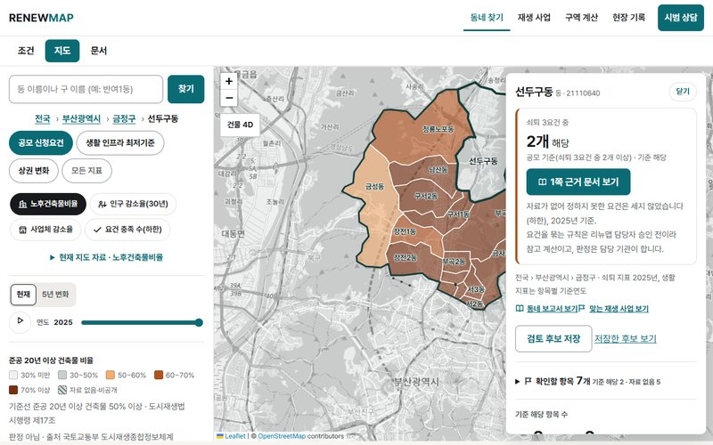

지금 이 동네 · 행정동
반여1동
부산광역시 해운대구
도시재생 쇠퇴 3요건 중-
3요건 가운데 2개 이상이면 도시재생활성화지역 지정 기준에 해당합니다(도시재생법 시행령 제17조).
- 인구 감소-기준 30년 최대 대비 20% 이상 감소
- 사업체 감소-기준 10년 최대 대비 5% 이상 감소
- 20년 넘은 건축물-기준 50% 이상
도시재생법 시행령 제17조 기준으로 셈한 참고 계산입니다. 판정은 담당 기관이 원문과 대조해 정합니다.
동 이름을 넣으면 인구·사업체·건물 노후를 공식 통계로 계산하고 재생 사업 9종의 요건에 견줘 봅니다.
모든 값에 원천과 기준일이 붙은 1쪽 근거 문서로 받습니다.
바로 보기
전국 읍·면·동을 볼 수 있고, 구역 계산과 건물 4D는 부산부터 됩니다.
로그인 없이 무료로 쓰고, 문서는 이 기기에서 만들어져 서버로 보내지 않습니다.
지금 이 동네 · 행정동
부산광역시 해운대구
도시재생 쇠퇴 3요건 중-
3요건 가운데 2개 이상이면 도시재생활성화지역 지정 기준에 해당합니다(도시재생법 시행령 제17조).
도시재생법 시행령 제17조 기준으로 셈한 참고 계산입니다. 판정은 담당 기관이 원문과 대조해 정합니다.
공식 통계로 셈한 비교용 점수로 줄을 세웠습니다. 지표 무게를 바꿔 1,000번 다시 셈한 순위 범위를 함께 적었습니다. 점수 산식과 전체 순위
건축물대장 사용승인일로 셈하면, 부산 법정동 가운데 지금은 '20년 넘은 건물 50%'(도시재생 쇠퇴 요건③)에 못 미치지만 몇 해 안에 닿는 곳이 있습니다.
지금 건물이 그대로 있을 때의 달력 계산입니다. 동을 누르면 건물 나이 4D로 봅니다.
공공 시스템은 행정동 쇠퇴 지표를 보여 줍니다.
리뉴맵은 그 숫자를 제출할 수 있는 모양으로 바꾸고, 구역과 현장까지 이어 갑니다.
동 카드를 바꿔 보고, 지도에서 요건을 확인하고, 1쪽 문서를 연 뒤 건물 나이를 4D로 돌려 기준선을 넘은 해와 올해를 나란히 봅니다.
한 번 계산한 숫자의 출처와 기준일이 다음 단계로 그대로 넘어갑니다.
전국 행정동의 인구·사업체·노후·생활시설·안전을 지도에서 봅니다.
동 요약, 1쪽 근거 문서, 시·군·구 비교
지역특화재생부터 지방소멸대응기금, 노후 산업단지까지 9종의 요건과 일정을 한 표로 봅니다.
동별 사업 요건 비교표(CSV)
지도에 구역을 그리면 필지를 모아 저층 주거 3분의 2와 20년 넘은 건물 비율을 셉니다.
신청요건 근거 1쪽(한글), 구역 경계 SHP, 반경 500m 생활시설표
사진과 위치를 남기고, 찍은 순간의 지문(SHA-256)으로 나중에 바뀌지 않았음을 보입니다.
사진대지(한글), 위치 파일, 재방문 비교
작년과 같은 기준으로 다시 재고, 건물 나이가 해마다 어떻게 바뀌는지 4D 모형으로 봅니다.
바뀐 칸만 표시한 비교, 준공 후 실적보고서

위 카드의 '20년 넘은 건축물' 숫자를 펼친 실제 원장 기록입니다.
1쪽 문서와 엑셀로 내보내는 모든 숫자에 같은 기록이 따라갑니다.
같은 기준일로 다시 계산하면 같은 값이 나옵니다.
공개 자료로 만드는 문서는 무료입니다.
시범 과업은 과업 1건·행정동 1곳 기준 99만원(VAT 별도)부터이고, 산출물·검수·보완 범위는 계약 전에 함께 정합니다. 시범 과업 상담